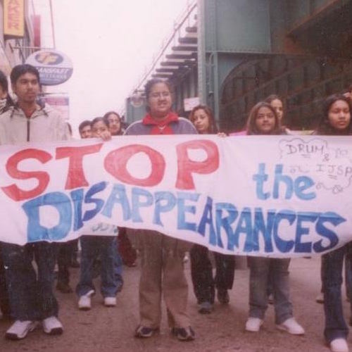
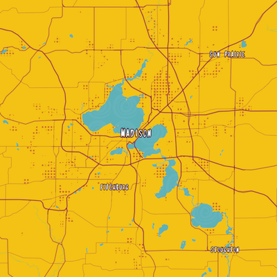

vignesh v. ramachandran
Menu
projects
about
cv
| writing |
forthcoming
| cartography |
"INS, FBI, No More Kidnaps, No More Lies"

A Carnivalesque View of the World

Whose Past, Whose Present: Analyzing Settler-Colonial Discourse Materialized